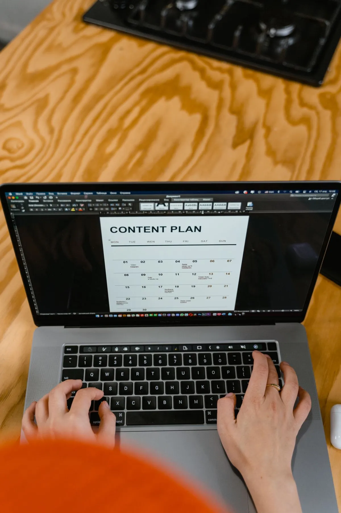
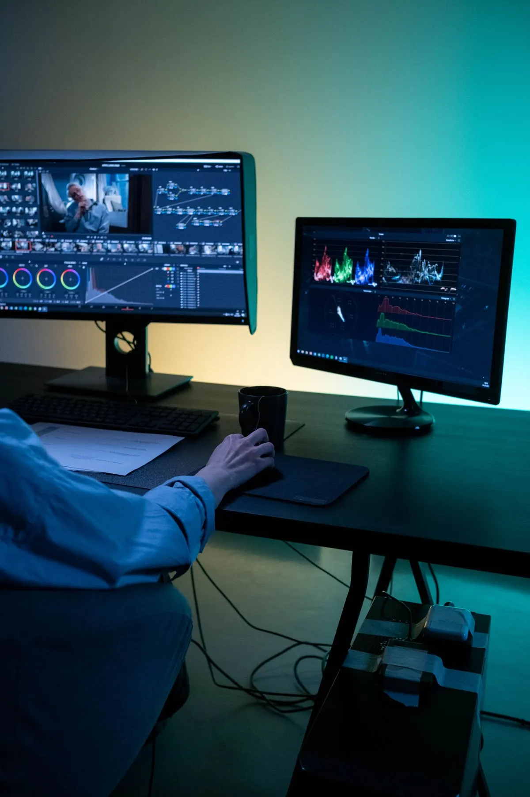

September 30, 2026 · 4 min read
Why Hiring an Editor Doesn't Fix Your Content Problem
Founders who feel behind on content usually reach for the same fix first: hire an editor. It seems like the obvious move. Filming eats time, editing eats more, so cutting the editing out should free up the biggest chunk of the week. Most founders who make this hire are disappointed within a few months, not because the editor did bad work, but because editing was never the actual bottleneck.
What an editor actually solves
An editor turns raw footage into a finished file. That's the job, and a good one does it well. But they don't tell you what to film, why it matters, or how it fits into anything bigger than itself. Hand a skilled editor a pile of unclear footage and they'll hand you back a well-cut video that still doesn't know what it's for.

01 — Strategy
What to say
Knowing what's worth talking about before anyone films.
02 — Direction
What to shoot
A shot list, not winging it in front of the lens.

03 — Editing
What to finish
The cut, once the first two are already handled.
"It's rarely a content problem. It's a path problem."
Book a Call to map your own gap →What was actually slowing you down
For most founders, the real bottleneck isn't the cut. It's everything before the camera turns on: knowing what to talk about this week instead of guessing at the last minute, having a shot list instead of winging it in front of the lens, keeping a consistent look across every piece, and knowing exactly where each video is supposed to send someone. None of that is an editing problem. It's a direction problem, and no amount of editing skill fixes it.
Why the hire feels like progress at first
For the first few weeks, it looks like it's working. Videos start going out again, and momentum picks back up just from the relief of not editing your own footage. Without a plan behind those videos, the same pattern that existed before shows back up, just cut better: sporadic topics, no throughline, no clear next step for whoever's watching. Three months in, the complaint isn't "we need a better editor." It's "we're posting again, but nothing's really moving."
What actually closes the gap
The fix isn't one role, it's the order of operations. Decide what's worth talking about before anyone gets hired. Build direction so filming starts with a shot list instead of a blank page. Then let editing follow that structure instead of trying to invent one in the timeline. Editing is one piece of a system. It was never a replacement for having one.
Check your own setup
Before you hire an editor, or if you already have one, ask yourself this: does whoever cuts your footage know what this week's video is actually supposed to accomplish, or are they just making it look good? If the honest answer is the second one, the gap isn't in the edit. It's upstream of it, and it's worth fixing before the next hire.
Want us to look at where your own gap actually is?
Book a Call